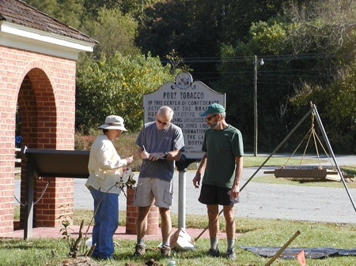
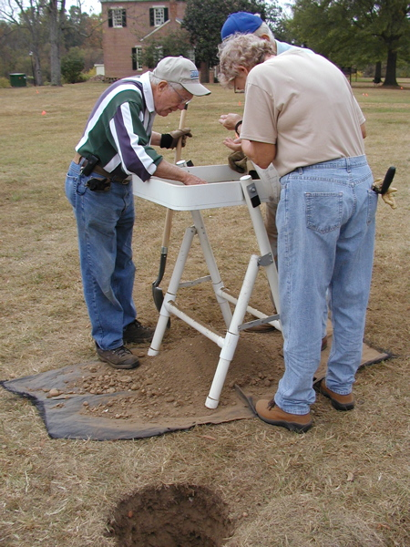
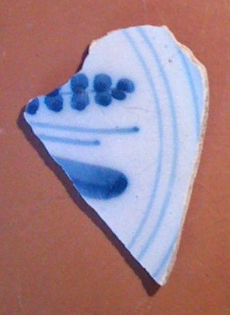
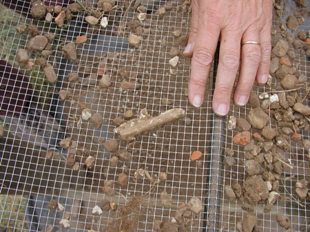

Port Tobacco Survey Weekend
October 19-21, 2007
ASM’s volunteer weekend at Port Tobacco was an extraordinary success, achieving far more than principals April Beisaw and Jim Gibb expected. Thirty-nine energetic volunteers from Maryland, North Carolina, Idaho, and New Jersey donated 472 hours (59 person days) producing flawless results. Not included in these numbers are the project staff and Charlie Hall of the Maryland Historical Trust. Our thanks to all. The survey of the southern portion of this 18th-century port town is now complete and we are heading into the laboratory to process the huge quantity of recovered material. We hope to complete the report by the end of November.
 |
 |
Carol, John and Jim complete paperwork near the Prot Tobacco well. |
CAT Candidates Walt, John and Maxine screen soil from a shovel test pit. |
 |
 |
A fragment of a tin-glazed earthenware plate recovered from Port Tobacco. The sherd probably dates to the second half of the 18th century. |
A tobacco pipestem encased in mortar in a screen. |

|
|
Maxine and Peter record the details of an excavation unit. |
|